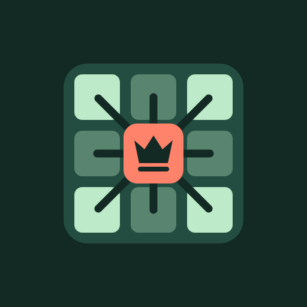

CHESS DOMINATION / IDENTITY EXPLORATIONS
01
Sovereign
Classic · refined · confident
A gold queen with a crisp ivory pedestal on deep petrol.
02
Blue Knight
Bold · geometric · sporty
An angular ivory knight with a lightning-cut mane on electric blue.
03

Control Grid
Tactical · modern · puzzle-first
A coral queen marks the center of a mint board with radiating control lines.
04
Citadel
Warm · emblematic · substantial
A cream rook carved into a warm vermilion seal.
05
Dominion
Abstract · graphic · playful
A black D assembled around a checkerboard counter on acid yellow.